In 2008 my family and I travelled to America to visit family and DisneyLand.It's a trip I'll never forget, nearly every little girls dream is to see the characters they watch day in day out in person. I'll never forget the moment I met Mickey and Minnie Mouse I didn't know what to do I just froze on the spot. Another moment that I'll never forget is when we went to see the muppets show in 3D little me didn't understand the concept of 3D and started crying because I thought that everything was just coming out at me and nobody else! One of my favourite roller-coasters was splash mountain which was in Magic Kingdom it was was like a fairytale coming through whilst we were inside but it quickly turned into a fast and scary decent down the mountain. We always visited the famous cocoa beach in Florida as well as spending time with family.
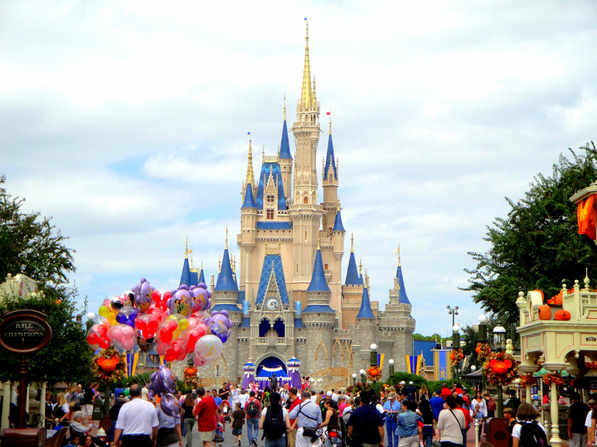
 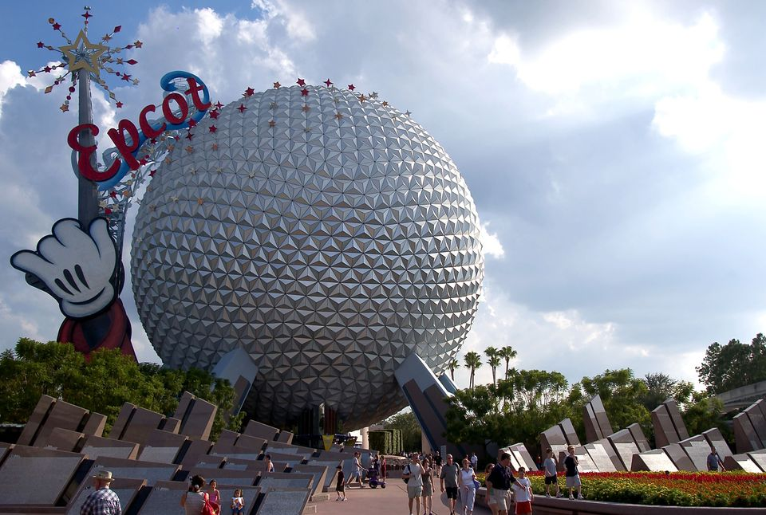">
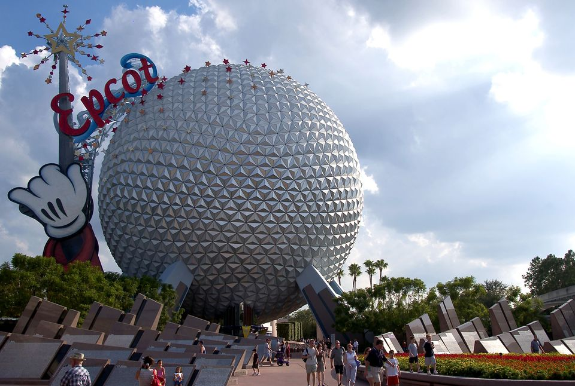">
In 2011 I visited Lanzarote for the 6th time with my family. I always loved going their it nearly became my 2nd home!There's loads to over there from waterparks to visiting Timanfaya lava field. Lanzarote is always very well known for its surfing beaches one in particular called Famara Beach. My brother and I spent a day attempting to surf he was more successful then me but its safe to say we had a very enjoyable day catching some waves in the sun. The waterpark was another great day the only down side was the steps that seemed to go on for ages to get up to each slide! The waterpark was definitely one of the funniest things I've done over in Lanzarote. Another really fun place I've gone to in Lanzarote is Racho Texas Park its basically a circus but not quiet there was loads of parrots and camels all over the place their as well as a dolphin show. Of course I've done the more obvious stuff like banana boats and boat trips over there we also visited another amazing beach called papagayo for a day.
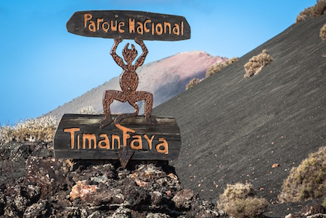 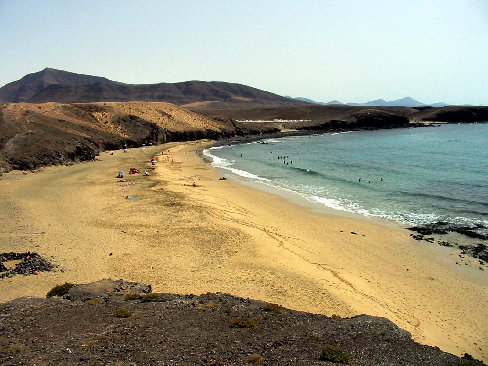 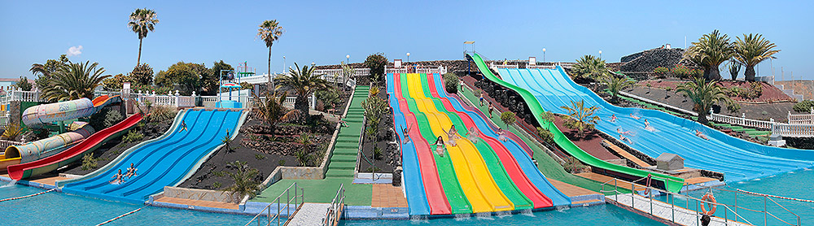
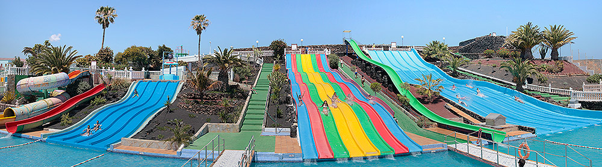
In 2016 as part of 4th year I went on a school trip to Spain and completed 115Km of the camino in 5 days. it was an experience of a lifetime and one I'll never forget! We flew from Dublin to Santiago and from their we began our adventure which took us through the border from Santiago to Portugal. Each day we walked nearly 20km- it was a long a painful few days but also a lot of fun. New friendships were made and others just became closer. Each night we would stay in different accommodation from hostels to apartments to even a hotel for the last 2 nights. Our luggage would be brought to each new accommodation by bus whilst we were left to walk. when we eventually arrived in Our final location the Town of Santiago De Compostela we quickly showered and then explored the town. Lots of retail therapy was done and we even got a swim in at the hotel on the last day before we left. It was the perfect way of ending 4th and starting summer!
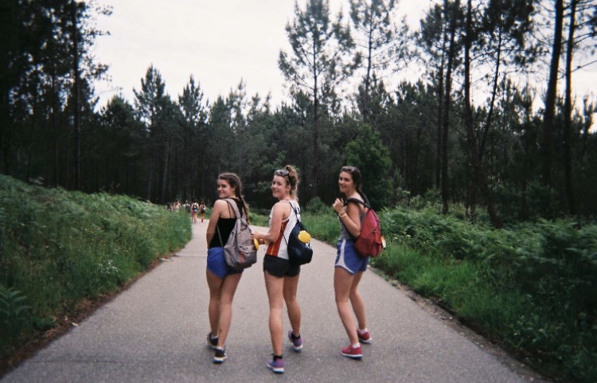 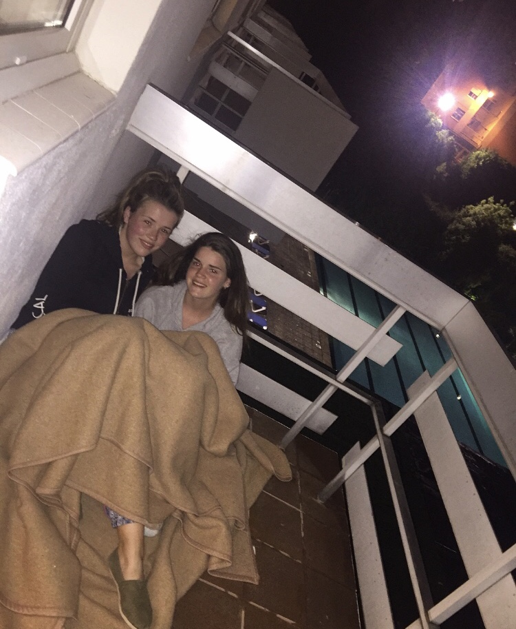 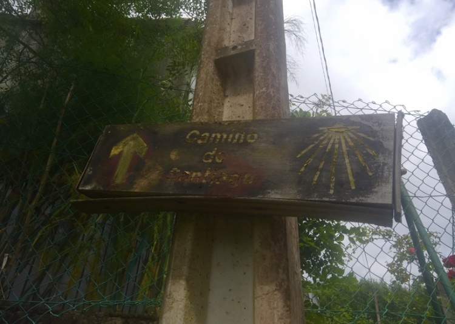 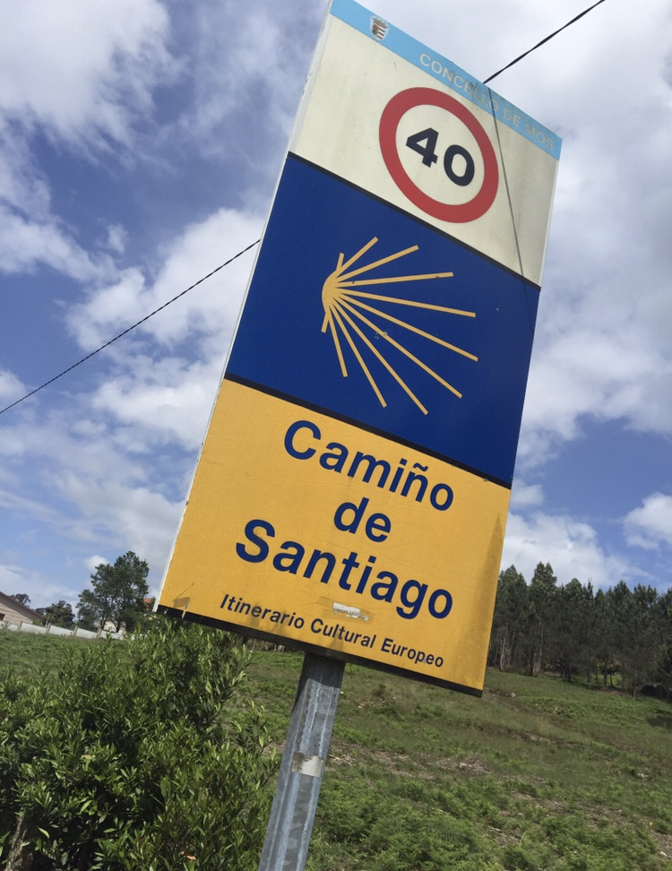 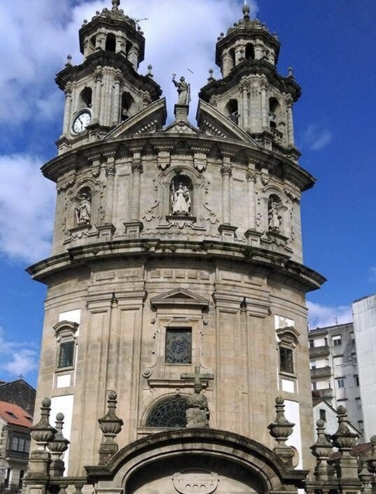